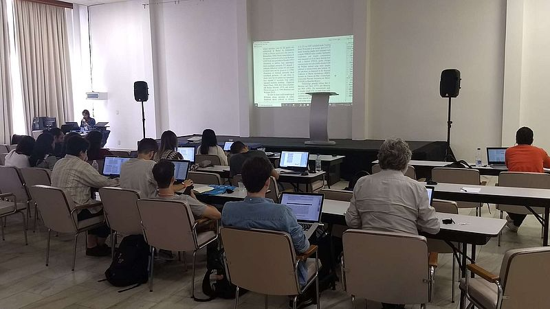

12 new species added to GBIF during the first Plazi training course at the Congresso Brasileiro de Zoologia

Plazi Minicurso at the Congresso Brasileiro de Zoologia, March 1, 2020
Taxonomic literature is an almost untapped resource of data covering our scholarly knowledge of biodiversity. This includes an estimated 500 Million printed pages and is augmented annually with over 17.000 taxonomic treatments of species new to science. This data represents in fact an incredibly rich citation network, albeit with most of the citations implicit, only understandable by extensive domain expertise, and often with an insurmountable time required to follow up chasing the cited resources. Plazi’s aim, together with the support of Arcadia and CERN’s Zenodo repository, is to liberate the imprisoned data and make it findable, accessible, interoperable and reusable (FAIR).
The training course at the Congresso Brasileiro de Zoologia at Aguas de Lindoia is the first in a series of training courses in which Plazi is teaching interested parties how to use its data preparation tools and become a data liberator. The goal of the course has been to arrive at adding the liberated data to the Global Biodiversity Information Facility (GBIF) and thus make it widely accessible and reusable.
The 13 participants showed great interest, even spending more than an extra hour after the official end to upload their data. In total, they added from five publications 12 new species to GBIF’s taxonomic backbone that have not been there before, out of a total of 14 taxonomic treatments, 22 figures and 66 materials citations (occurrences in GBIF language).
Data liberated from taxonomic publications by participants in the minicurso. figs figures, mc materials citations, treat treatments; TB TreatmentBank, BLR Biodiversity Literature Repository, GBIF Global Biodiversity Information Facility. The details of the markup can be explored by clicking through the respective representations of the article. The following students liberated the data: Victor de Queiroz, Sarah Stephany Pereira Garcia, Henrique Webber Andriolo and Gabriel Vieiradoi
| doi | treat | figs | mc | TB | BLR | GBIF |
|---|---|---|---|---|---|---|
| 10.1016/j.rbe.2018.06.003 | 2 | 6 | 1 | x | x | x |
| 10.1590/1678-4766e2018023 | 1 | 3 | 2 | x | x | x |
| 10.26107/RBZ-2019-0005 | 7 | 4 | 23 | x | x | x |
| 10.26107/RBZ-2020-0002 | 2 | 4 | 2 | x | x | x |
| 10.5281/zenodo.3693112 | 2 | 5 | 38 | x | x | x |
This minicurso is the launch of training courses that will be offered by Plazi to get more (citizen) scientists involved to broaden the community to liberate data from taxonomic publications.